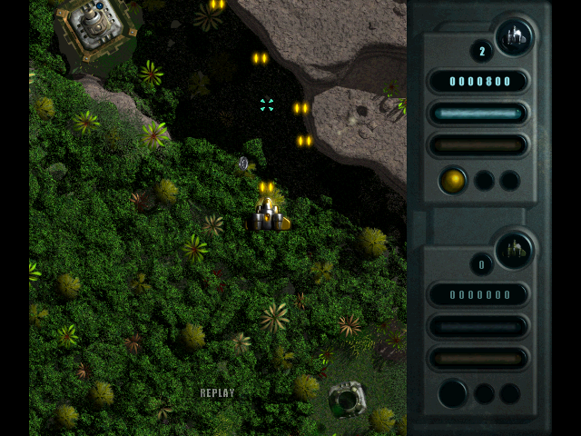

01
Air and ground
Take on flying formations and stationary turrets with different weapons. Charged attacks give you room to breathe when the screen gets crowded.
MAC CLASSIC. NEW ENGINES.
Back in action.
Dense jungle. Enemy formations. Your ship in the middle of it all. The vertical arcade shooter returns as a native macOS app — fly solo or bring a second pilot on the same Mac.
macOS 11+ / Apple Silicon & Intel

01 / The game
Dodge. Charge. Fire back.
Deimos Rising by Swoop Software and Ambrosia Software combines aerial combat with ground attacks. Fly through twelve sectors, collect bonuses, and watch your shields. The next enemy is never far away.
Take on flying formations and stationary turrets with different weapons. Charged attacks give you room to breathe when the screen gets crowded.
One or two players on the same Mac. Assign keyboards and controllers to each pilot and customize their bindings independently.
Chase your high score, save your progress, and keep your replays. Pick up your next run where you want to continue.
02 / Screenshots
Captured in the native reimplementation.
Select an image to take a closer look.
03 / The port
An independent reimplementation built with Swift and SpriteKit. Made for modern Macs, with the character of the classic in mind.
Explore the project on GitHubA native app for Apple Silicon and Intel, targeting macOS 11 Big Sur and later.
Separate keyboard and controller bindings for each player. Adjust rumble strength or turn it off entirely.
German or English, music and sound effects, and an optional side bezel — all together in Settings.
Comparison with the original continues. New versions refine gameplay, visuals, and audio.
04 / Next stop: Deimos
Visit GitHub Releases for published builds, downloads, and version notes.
No emulation inside the app. The port runs natively on your Mac.
FAQ
Yes. Its predecessor has a native macOS port too. If you enjoy Deimos Rising, your next mission is waiting there.
Discover Mars Rising